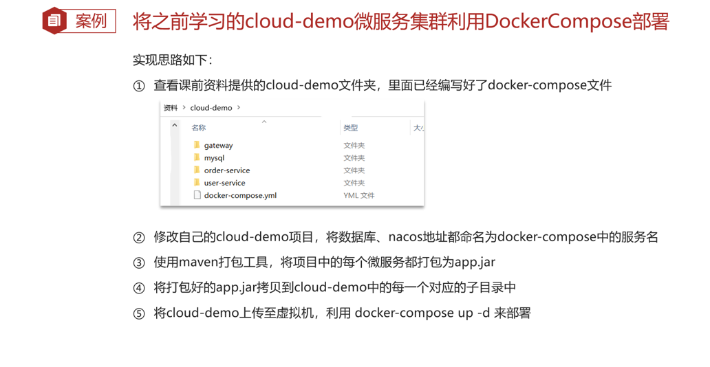

docker：速速上手docker部署镜像
Docker
1.初识Docker
1.1.什么是Docker
微服务虽然具备各种各样的优势，但服务的拆分通用给部署带来了很大的麻烦。
- 分布式系统中，依赖的组件非常多，不同组件之间部署时往往会产生一些冲突。
- 在数百上千台服务中重复部署，环境不一定一致，会遇到各种问题
1.1.1.应用部署的环境问题
大型项目组件较多，运行环境也较为复杂，部署时会碰到一些问题：
依赖关系复杂，容易出现兼容性问题
开发、测试、生产环境有差异

例如一个项目中，部署时需要依赖于node.js、Redis、RabbitMQ、MySQL等，这些服务部署时所需要的函数库、依赖项各不相同，甚至会有冲突。给部署带来了极大的困难。
1.1.2.Docker解决依赖兼容问题
而Docker确巧妙的解决了这些问题，Docker是如何实现的呢？
Docker为了解决依赖的兼容问题的，采用了两个手段：
将应用的Libs（函数库）、Deps（依赖）、配置与应用一起打包
将每个应用放到一个隔离容器去运行，避免互相干扰

这样打包好的应用包中，既包含应用本身，也保护应用所需要的Libs、Deps，无需再操作系统上安装这些，自然就不存在不同应用之间的兼容问题了。
虽然解决了不同应用的兼容问题，但是开发、测试等环境会存在差异，操作系统版本也会有差异，怎么解决这些问题呢？
1.1.3.Docker解决操作系统环境差异
要解决不同操作系统环境差异问题，必须先了解操作系统结构。以一个Ubuntu操作系统为例，结构如下：

结构包括：
- 计算机硬件：例如CPU、内存、磁盘等
- 系统内核：所有Linux发行版的内核都是Linux，例如CentOS、Ubuntu、Fedora等。内核可以与计算机硬件交互，对外提供内核指令，用于操作计算机硬件。
- 系统应用：操作系统本身提供的应用、函数库。这些函数库是对内核指令的封装，使用更加方便。
应用于计算机交互的流程如下：
1）应用调用操作系统应用（函数库），实现各种功能
2）系统函数库是对内核指令集的封装，会调用内核指令
3）内核指令操作计算机硬件
Ubuntu和CentOSpringBoot都是基于Linux内核，无非是系统应用不同，提供的函数库有差异：

此时，如果将一个Ubuntu版本的MySQL应用安装到CentOS系统，MySQL在调用Ubuntu函数库时，会发现找不到或者不匹配，就会报错了：

Docker如何解决不同系统环境的问题？
- Docker将用户程序与所需要调用的系统(比如Ubuntu)函数库一起打包
- Docker运行到不同操作系统时，直接基于打包的函数库，借助于操作系统的Linux内核来运行
如图：

1.1.4.小结
Docker如何解决大型项目依赖关系复杂，不同组件依赖的兼容性问题？
- Docker允许开发中将应用、依赖、函数库、配置一起打包，形成可移植镜像
- Docker应用运行在容器中，使用沙箱机制，相互隔离
Docker如何解决开发、测试、生产环境有差异的问题？
- Docker镜像中包含完整运行环境，包括系统函数库，仅依赖系统的Linux内核，因此可以在任意Linux操作系统上运行
Docker是一个快速交付应用、运行应用的技术，具备下列优势：
- 可以将程序及其依赖、运行环境一起打包为一个镜像，可以迁移到任意Linux操作系统
- 运行时利用沙箱机制形成隔离容器，各个应用互不干扰
- 启动、移除都可以通过一行命令完成，方便快捷
1.2.Docker和虚拟机的区别
Docker可以让一个应用在任何操作系统中非常方便的运行。而以前我们接触的虚拟机，也能在一个操作系统中，运行另外一个操作系统，保护系统中的任何应用。
两者有什么差异呢？
虚拟机（virtual machine）是在操作系统中模拟硬件设备，然后运行另一个操作系统，比如在 Windows 系统里面运行 Ubuntu 系统，这样就可以运行任意的Ubuntu应用了。
Docker仅仅是封装函数库，并没有模拟完整的操作系统，如图：

对比来看：

小结：
Docker和虚拟机的差异：
docker是一个系统进程；虚拟机是在操作系统中的操作系统
docker体积小、启动速度快、性能好；虚拟机体积大、启动速度慢、性能一般
1.3.Docker架构
1.3.1.镜像和容器
Docker中有几个重要的概念：
镜像（Image）：Docker将应用程序及其所需的依赖、函数库、环境、配置等文件打包在一起，称为镜像。
容器（Container）：镜像中的应用程序运行后形成的进程就是容器，只是Docker会给容器进程做隔离，对外不可见。
一切应用最终都是代码组成，都是硬盘中的一个个的字节形成的文件。只有运行时，才会加载到内存，形成进程。
而镜像，就是把一个应用在硬盘上的文件、及其运行环境、部分系统函数库文件一起打包形成的文件包。这个文件包是只读的。
容器呢，就是将这些文件中编写的程序、函数加载到内存中允许，形成进程，只不过要隔离起来。因此一个镜像可以启动多次，形成多个容器进程。

例如你下载了一个QQ，如果我们将QQ在磁盘上的运行文件及其运行的操作系统依赖打包，形成QQ镜像。然后你可以启动多次，双开、甚至三开QQ，跟多个妹子聊天。
1.3.2.DockerHub
开源应用程序非常多，打包这些应用往往是重复的劳动。为了避免这些重复劳动，人们就会将自己打包的应用镜像，例如Redis、MySQL镜像放到网络上，共享使用，就像GitHub的代码共享一样。
DockerHub：DockerHub是一个官方的Docker镜像的托管平台。这样的平台称为Docker Registry。
我们一方面可以将自己的镜像共享到DockerHub，另一方面也可以从DockerHub拉取镜像：

1.3.3.Docker架构
我们要使用Docker来操作镜像、容器，就必须要安装Docker。
Docker是一个CS架构的程序，由两部分组成：
服务端(server)：Docker守护进程，负责处理Docker指令，管理镜像、容器等
客户端(client)：通过命令或RestAPI向Docker服务端发送指令。可以在本地或远程向服务端发送指令。
如图：

1.3.4.小结
镜像：
- 将应用程序及其依赖、环境、配置打包在一起
容器：
- 镜像运行起来就是容器，一个镜像可以运行多个容器
Docker结构：
服务端：接收命令或远程请求，操作镜像或容器
客户端：发送命令或者请求到Docker服务端
DockerHub：
- 一个镜像托管的服务器，类似的还有阿里云镜像服务，统称为DockerRegistry
1.4.安装Docker
企业部署一般都是采用Linux操作系统，而其中又数CentOS发行版占比最多，因此我们在CentOS下安装Docker。参考我的另外一篇博客。
2.Docker的基本操作
2.1.镜像操作
2.1.1.镜像名称
首先来看下镜像的名称组成：
- 镜名称一般分两部分组成：[repository]:[tag]。
- 在没有指定tag时，默认是latest，代表最新版本的镜像
如图：

这里的mysql就是repository，5.7就是tag，合一起就是镜像名称，代表5.7版本的MySQL镜像。
2.1.2.镜像命令
常见的镜像操作命令如图：

2.1.3.案例1-拉取、查看镜像
需求：从DockerHub中拉取一个nginx镜像并查看
1）首先去镜像仓库搜索nginx镜像，比如DockerHub:

2）根据查看到的镜像名称，拉取自己需要的镜像，通过命令：docker pull nginx

3）通过命令：docker images 查看拉取到的镜像

2.1.4.案例2-保存、导入镜像
需求：利用docker save将nginx镜像导出磁盘，然后再通过load加载回来
1）利用docker xx –help命令查看docker save和docker load的语法
例如，查看save命令用法，可以输入命令：
1 | docker save --help |
结果：

命令格式：
1 | docker save -o [保存的目标文件名称] [镜像名称] |
2）使用docker save导出镜像到磁盘
运行命令：
1 | docker save -o nginx.tar nginx:latest |
结果如图：

3）使用docker load加载镜像
先删除本地的nginx镜像：
1 | docker rmi nginx:latest |
然后运行命令，加载本地文件：
1 | docker load -i nginx.tar |
结果：

2.2.容器操作
2.2.1.容器相关命令
容器操作的命令如图：

容器保护三个状态：
- 运行：进程正常运行
- 暂停：进程暂停，CPU不再运行，并不释放内存
- 停止：进程终止，回收进程占用的内存、CPU等资源
其中：
docker run：创建并运行一个容器，处于运行状态
docker pause：让一个运行的容器暂停
docker unpause：让一个容器从暂停状态恢复运行
docker stop：停止一个运行的容器
docker start：让一个停止的容器再次运行
docker rm：删除一个容器
2.2.2.案例-创建并运行一个容器
创建并运行nginx容器的命令：
1 | docker run --name containerName -p 80:80 -d nginx |
命令解读：
- docker run ：创建并运行一个容器
- –name : 给容器起一个名字，比如叫做mn
- -p ：将宿主机端口与容器端口映射，冒号左侧是宿主机端口，右侧是容器端口
- -d：后台运行容器
- nginx：镜像名称，例如nginx
这里的-p参数，是将容器端口映射到宿主机端口。
默认情况下，容器是隔离环境，我们直接访问宿主机的80端口，肯定访问不到容器中的nginx。
现在，将容器的80与宿主机的80关联起来，当我们访问宿主机的80端口时，就会被映射到容器的80，这样就能访问到nginx了：

2.2.3.案例-进入容器，修改文件
需求：进入Nginx容器，修改HTML文件内容，添加“传智教育欢迎您”
提示：进入容器要用到docker exec命令。
步骤：
1）进入容器。进入我们刚刚创建的nginx容器的命令为：
1 | docker exec -it mn bash |
命令解读：
docker exec ：进入容器内部，执行一个命令
-it : 给当前进入的容器创建一个标准输入、输出终端，允许我们与容器交互
mn ：要进入的容器的名称
bash：进入容器后执行的命令，bash是一个linux终端交互命令
2）进入nginx的HTML所在目录 /usr/share/nginx/html
容器内部会模拟一个独立的Linux文件系统，看起来如同一个linux服务器一样：

nginx的环境、配置、运行文件全部都在这个文件系统中，包括我们要修改的html文件。
查看DockerHub网站中的nginx页面，可以知道nginx的html目录位置在/usr/share/nginx/html
我们执行命令，进入该目录：
1 | cd /usr/share/nginx/html |
查看目录下文件：

3）修改index.html的内容
容器内没有vi命令，无法直接修改，我们用下面的命令来修改：
1 | sed -i -e 's#Welcome to nginx#传智教育欢迎您#g' -e 's#<head>#<head><meta charset="utf-8">#g' index.html |
在浏览器访问自己的虚拟机地址，例如我的是：http://192.168.150.101，即可看到结果：

2.2.4.小结
docker run命令的常见参数有哪些？
- –name：指定容器名称
- -p：指定端口映射
- -d：让容器后台运行
查看容器日志的命令：
- docker logs
- 添加 -f 参数可以持续查看日志
查看容器状态：
- docker ps
- docker ps -a 查看所有容器，包括已经停止的
2.3.数据卷（容器数据管理）
在之前的nginx案例中，修改nginx的html页面时，需要进入nginx内部。并且因为没有编辑器，修改文件也很麻烦。
这就是因为容器与数据（容器内文件）耦合带来的后果。

要解决这个问题，必须将数据与容器解耦，这就要用到数据卷了。
2.3.1.什么是数据卷
数据卷（volume）是一个虚拟目录，指向宿主机文件系统中的某个目录。

一旦完成数据卷挂载，对容器的一切操作都会作用在数据卷对应的宿主机目录了。
这样，我们操作宿主机的/var/lib/docker/volumes/html目录，就等于操作容器内的/usr/share/nginx/html目录了
2.3.2.数据集操作命令
数据卷操作的基本语法如下：
1 | docker volume [COMMAND] |
docker volume命令是数据卷操作，根据命令后跟随的command来确定下一步的操作：
- create 创建一个volume
- inspect 显示一个或多个volume的信息
- ls 列出所有的volume
- prune 删除未使用的volume
- rm 删除一个或多个指定的volume
2.3.3.创建和查看数据卷
需求：创建一个数据卷，并查看数据卷在宿主机的目录位置
① 创建数据卷
1 | docker volume create html |
② 查看所有数据
1 | docker volume ls |
结果：

③ 查看数据卷详细信息卷
1 | docker volume inspect html |
结果：

可以看到，我们创建的html这个数据卷关联的宿主机目录为/var/lib/docker/volumes/html/_data目录。
小结：
数据卷的作用：
- 将容器与数据分离，解耦合，方便操作容器内数据，保证数据安全
数据卷操作：
- docker volume create：创建数据卷
- docker volume ls：查看所有数据卷
- docker volume inspect：查看数据卷详细信息，包括关联的宿主机目录位置
- docker volume rm：删除指定数据卷
- docker volume prune：删除所有未使用的数据卷
2.3.4.挂载数据卷
我们在创建容器时，可以通过 -v 参数来挂载一个数据卷到某个容器内目录，命令格式如下：
1 | docker run \ |
这里的-v就是挂载数据卷的命令：
-v html:/root/htm：把html数据卷挂载到容器内的/root/html这个目录中
2.3.5.案例-给nginx挂载数据卷
需求：创建一个nginx容器，修改容器内的html目录内的index.html内容
分析：上个案例中，我们进入nginx容器内部，已经知道nginx的html目录所在位置/usr/share/nginx/html ，我们需要把这个目录挂载到html这个数据卷上，方便操作其中的内容。
提示：运行容器时使用 -v 参数挂载数据卷
步骤：
① 创建容器并挂载数据卷到容器内的HTML目录
1 | docker run --name mn -v html:/usr/share/nginx/html -p 80:80 -d nginx |
② 进入html数据卷所在位置，并修改HTML内容
1 | # 查看html数据卷的位置 |
2.3.6.案例-给MySQL挂载本地目录
容器不仅仅可以挂载数据卷，也可以直接挂载到宿主机目录上。关联关系如下：
- 带数据卷模式：宿主机目录 –> 数据卷 —> 容器内目录
- 直接挂载模式：宿主机目录 —> 容器内目录
如图：

语法：
目录挂载与数据卷挂载的语法是类似的：
- -v [宿主机目录]:[容器内目录]
- -v [宿主机文件]:[容器内文件]
需求：创建并运行一个MySQL容器，将宿主机目录直接挂载到容器
实现思路如下：
1）在将课前资料中的mysql.tar文件上传到虚拟机，通过load命令加载为镜像
2）创建目录/tmp/mysql/data
3）创建目录/tmp/mysql/conf，将课前资料提供的hmy.cnf文件上传到/tmp/mysql/conf
4）去DockerHub查阅资料，创建并运行MySQL容器，要求：
① 挂载/tmp/mysql/data到mysql容器内数据存储目录
② 挂载/tmp/mysql/conf/hmy.cnf到mysql容器的配置文件
③ 设置MySQL密码
2.3.7.小结
docker run的命令中通过 -v 参数挂载文件或目录到容器中：
- -v volume名称:容器内目录
- -v 宿主机文件:容器内文
- -v 宿主机目录:容器内目录
数据卷挂载与目录直接挂载的
- 数据卷挂载耦合度低，由docker来管理目录，但是目录较深，不好找
- 目录挂载耦合度高，需要我们自己管理目录，不过目录容易寻找查看
3.Dockerfile自定义镜像
常见的镜像在DockerHub就能找到，但是我们自己写的项目就必须自己构建镜像了。
而要自定义镜像，就必须先了解镜像的结构才行。
3.1.镜像结构
镜像是将应用程序及其需要的系统函数库、环境、配置、依赖打包而成。
我们以MySQL为例，来看看镜像的组成结构：

简单来说，镜像就是在系统函数库、运行环境基础上，添加应用程序文件、配置文件、依赖文件等组合，然后编写好启动脚本打包在一起形成的文件。
我们要构建镜像，其实就是实现上述打包的过程。
3.2.Dockerfile语法
构建自定义的镜像时，并不需要一个个文件去拷贝，打包。
我们只需要告诉Docker，我们的镜像的组成，需要哪些BaseImage、需要拷贝什么文件、需要安装什么依赖、启动脚本是什么，将来Docker会帮助我们构建镜像。
而描述上述信息的文件就是Dockerfile文件。
Dockerfile就是一个文本文件，其中包含一个个的**指令(Instruction)**，用指令来说明要执行什么操作来构建镜像。每一个指令都会形成一层Layer。

更新详细语法说明，请参考官网文档： https://docs.docker.com/engine/reference/builder
3.3.小结
小结：
Dockerfile的本质是一个文件，通过指令描述镜像的构建过程
Dockerfile的第一行必须是FROM，从一个基础镜像来构建
基础镜像可以是基本操作系统，如Ubuntu。也可以是其他人制作好的镜像，例如：java:8-alpine
4.Docker-Compose
4.1 dockerCompose介绍
Compose文件是一个文本文件，通过指令定义集群中的每个容器如何运行。格式如下：
1 | version: "3.8" |
上面的Compose文件就描述一个项目，其中包含两个容器：
- mysql：一个基于
mysql:5.7.25镜像构建的容器，并且挂载了两个目录 - web：一个基于
docker build临时构建的镜像容器，映射端口时8090
DockerCompose的详细语法参考官网：https://docs.docker.com/compose/compose-file/
其实DockerCompose文件可以看做是将多个docker run命令写到一个文件，只是语法稍有差异。
4.2 dockerCompose案例（没做实操）
dockerCompose底层可以直接使用服务名称连接到对应微服务而不是用地址，比如配置nacos的地址，在Java的application.yml文件的spring的addr中配置之前写的是localhost：10086，但是其他主机访问不到。dockerCompose能够使用服务名称跨设备访问微服务。nacos：10086。
